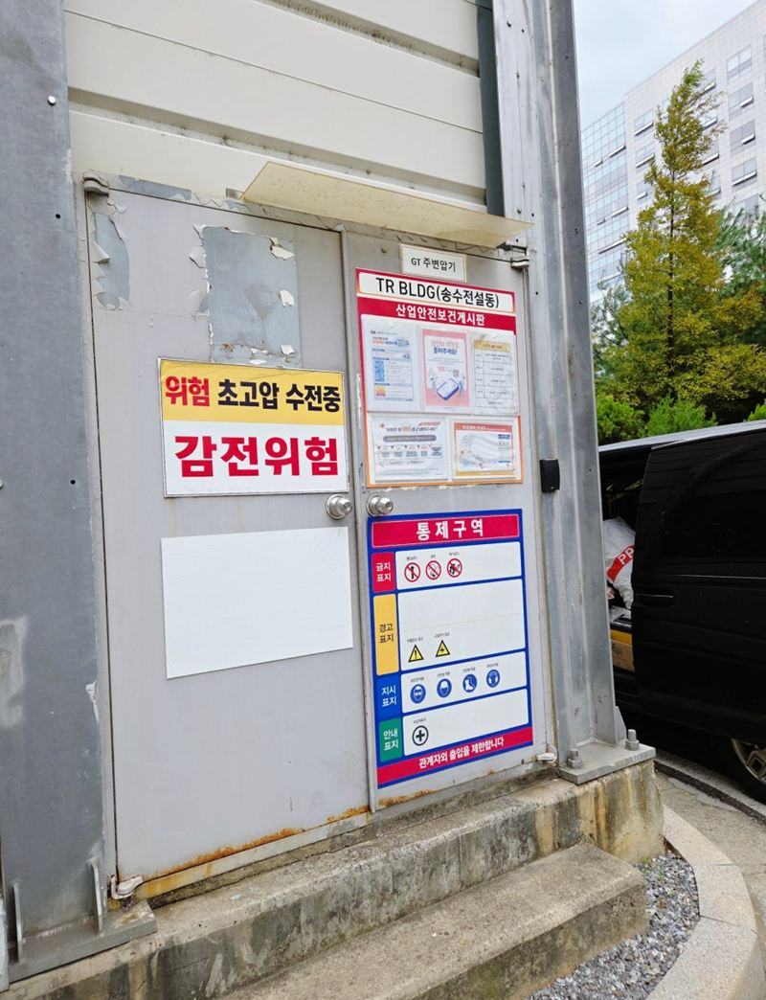
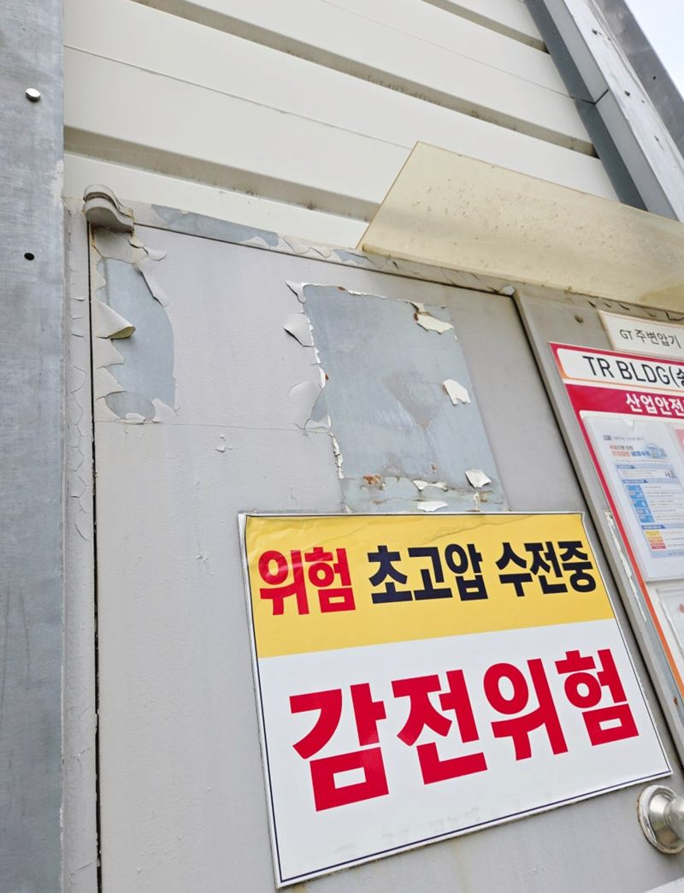
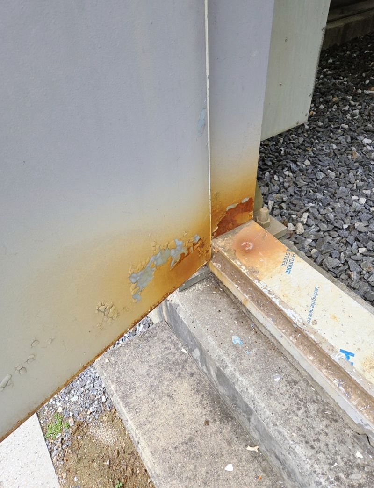
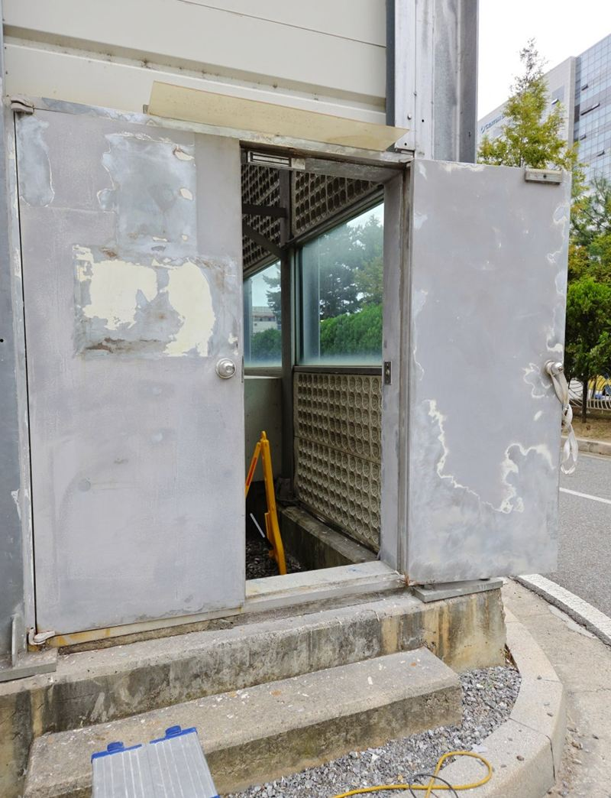
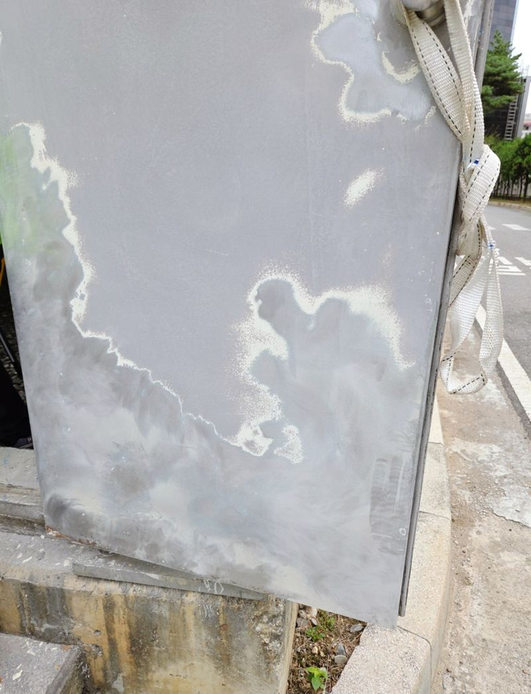
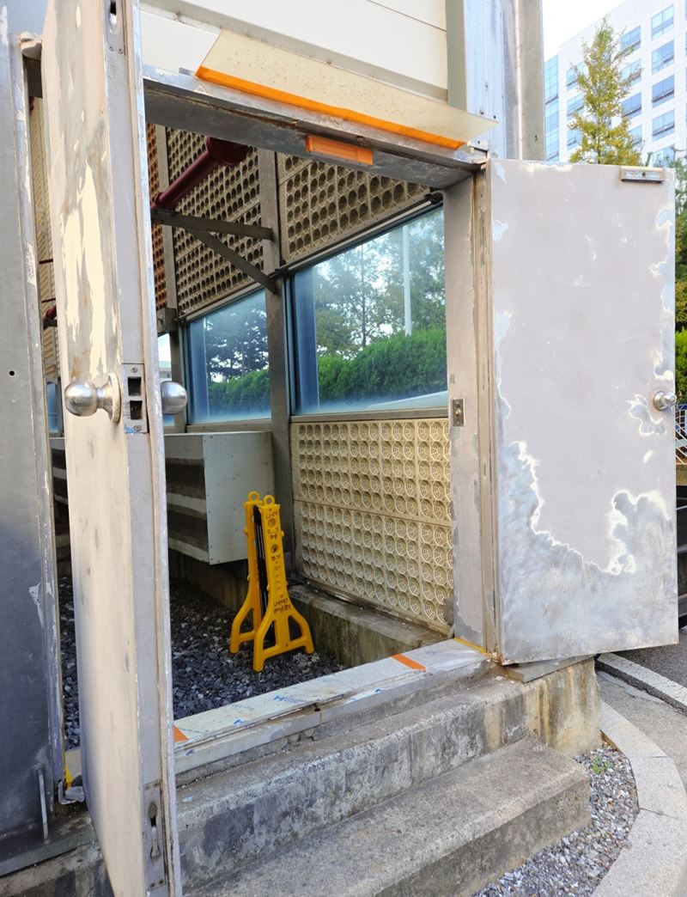
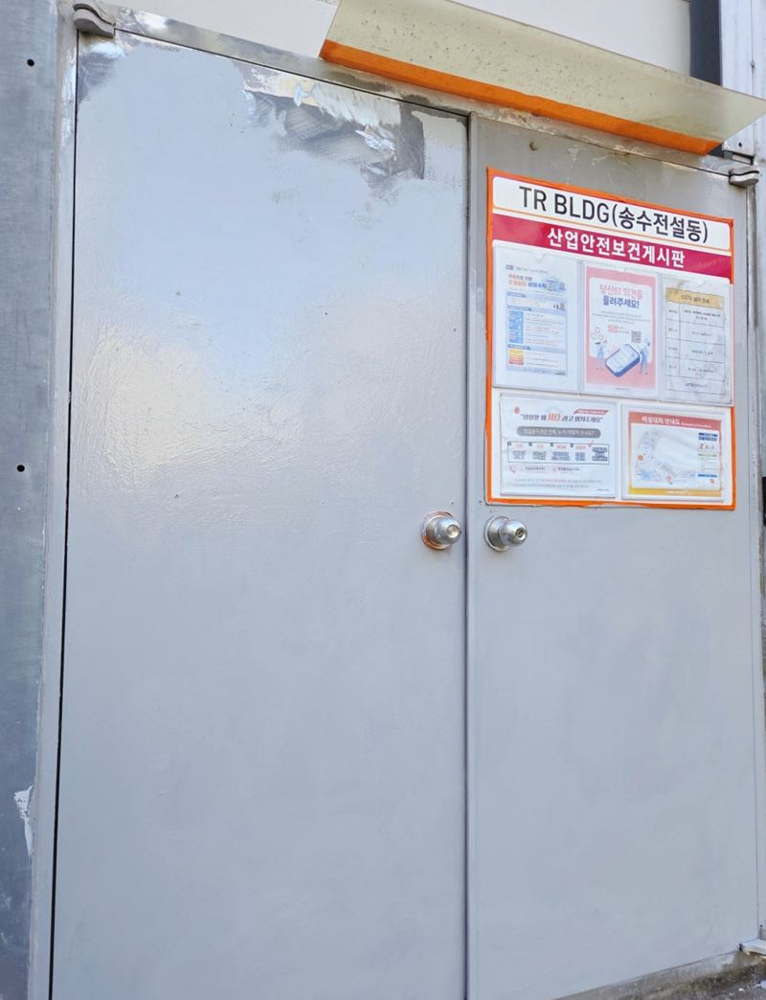

하남 철문 페인트 전 녹 제거·방청 작업 순서

 도장 전도장 후
도장 전도장 후← 밀어서 전후 비교 →
건물 밖 전기실 철문이 아래쪽부터 녹이 번지고 칠이 군데군데 들떠 있었어요. 바닥 물기와 오염이 닿는 자리라 아랫단이 특히 심했어요. 새 페인트보다 바탕 정리에 훨씬 많은 시간을 들였어요. 녹을 갈아 내고, 방청 처리를 하고, 충분히 말린 뒤에야 칠했어요.
| 현장 | 하남, 건물 외부 전기실 철문 |
|---|---|
| 상태 | 하단 녹 번짐, 칠 들뜸·벗겨짐 |
| 한 일 | 샌딩(녹·들뜬 칠 제거) → 경계 다듬기 → 분진 청소 → 방청 프라이머 → 건조 → 전체 도장 |
| 기간 | 건조 시간을 두고 이틀에 걸쳐 진행 |
녹 위에 바로 칠하면
녹과 들뜬 칠 위에 새 페인트를 바르면 처음엔 깨끗해 보여요. 하지만 바탕이 약해서 몇 달 지나면 새 칠이 통째로 들뜨고, 그 아래에서 녹이 다시 올라와요. 결국 더 넓게 벗겨진 상태로 다시 해야 해요. 그래서 철문 도장은 칠보다 바탕 준비가 먼저예요.


녹 제거부터 마감까지
샌딩으로 바탕 정리
샌딩기로 녹슨 곳과 들뜬 칠을 갈아 냈어요. 철판을 깎아 내는 게 아니라, 새 도료가 붙을 수 있는 바탕을 만드는 작업이에요. 변색된 자리만 보지 않고 주변 상태까지 같이 봤어요.


분진 청소
갈아 낸 가루가 남으면 프라이머가 제대로 안 붙어요. 표면을 깨끗이 털고 닦았어요.
방청 프라이머
녹이 다시 생기는 걸 늦추는 방청 프라이머를 먼저 발랐어요. 색을 내는 마감 페인트와는 역할이 달라요.

충분히 말린 뒤 전체 도장
프라이머가 다 마른 다음, 협의한 색으로 문 한 면 전체를 칠했어요.

왜 한 면 전체를 칠했을까
같은 번호의 페인트라도 오래 칠해 둔 면과 새로 칠한 면은 색이 다르게 보여요. 녹 슨 아래쪽만 칠하면 그 경계선이 눈에 띄어요. 원래 분위기를 그대로 지키려고 한쪽 구간만 덧칠하지 않고 면 전체를 새로 칠했어요.
다만 방청 처리를 했다고 녹이 영원히 안 생기는 건 아니에요. 긁히거나 칠이 깨진 자리가 생기면 그 부분을 일찍 손봐 주시는 게 좋아요.
철문 도장을 많이 맡기는 곳
- 전기실·기계실 문바깥에 있어 비와 바닥 물기를 늘 맞아요.
- 아파트 지하주차장 방화문습기가 많아 아래부터 녹이 올라와요.
- 상가 뒷문·셔터 박스눈에 덜 띄어 방치되다 녹이 커져요.
- 철제 난간·대문같은 순서로 녹 제거 후 칠해요.
철문 녹, 미루면 이렇게 돼요
- 칠이 들뜨기 시작들뜬 칠 아래로 물이 들어가 녹이 퍼져요.
- 아래부터 녹이 번짐바닥 물기를 늘 맞는 아랫단이 먼저 삭아요.
- 구멍이 뚫림이 단계까지 가면 도장으로는 막을 수 없어요.
철문 도장 질문
문을 떼서 칠하나요?
대부분 달린 채로 주변을 보양하고 칠해요. 손잡이·안내판은 가리고 작업해요.
색을 바꿀 수도 있나요?
가능해요. 건물 관리 규정이 있으면 먼저 확인해 주세요.
칠 냄새가 오래가나요?
바깥 문은 금방 빠져요. 실내와 연결된 문이면 환기를 해 주세요.
문이 마를 동안 출입은 어떻게 하나요?
칠이 마를 때까지 열어 두거나 손대지 않도록 표시해 둬요.
녹이 구멍 날 정도면요?
철판이 삭아 구멍이 났다면 도장보다 부분 교체나 문 교체를 검토해요.
여러 개 문을 한 번에 할 수 있나요?
건물 안 여러 철문을 한 번에 진행하면 일정 잡기가 편해요.
방청 프라이머만 발라 두면 안 되나요?
프라이머는 밑칠이라 햇빛과 비에 약해요. 마감 페인트로 덮어야 오래가요.
샌딩할 때 먼지가 많이 나나요?
녹 가루가 날려서 주변을 덮고 작업한 뒤 깨끗이 치워요.
겨울에도 칠할 수 있나요?
기온이 너무 낮으면 잘 마르지 않아서 따뜻한 낮 시간에 하거나 날을 골라요.
다른 조경·시설물 현장
철문 전체와 녹슨 부분을 가까이 찍어 보내 주세요.
전화 상담 010-4517-9872